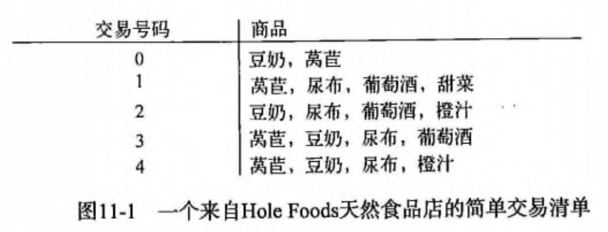
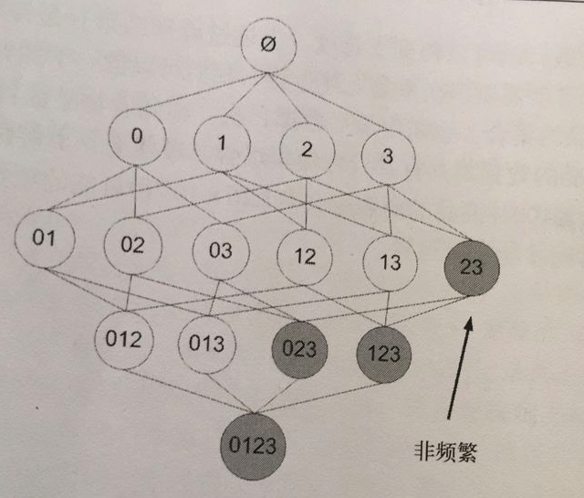
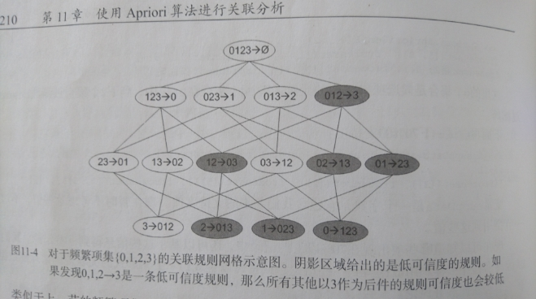
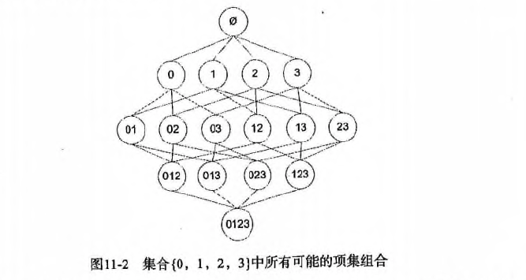

第 11 章 使用 Apriori 算法进行关联分析
关联分析
关联分析是一种在大规模数据集中寻找有趣关系的任务。 这些关系可以有两种形式: 频繁项集（frequent item sets）: 经常出现在一块的物品的集合。 关联规则（associational rules）: 暗示两种物品之间可能存在很强的关系。
相关术语
-
关联分析（关联规则学习): 从大规模数据集中寻找物品间的隐含关系被称作
关联分析(associati analysis)或者关联规则学习（association rule learning）。 下面是用一个杂货店例子来说明这两个概念，如下图所示:
 -
频繁项集: {葡萄酒, 尿布, 豆奶} 就是一个频繁项集的例子。
- 关联规则: 尿布 -> 葡萄酒 就是一个关联规则。这意味着如果顾客买了尿布，那么他很可能会买葡萄酒。
那么 频繁 的定义是什么呢？怎么样才算频繁呢？
度量它们的方法有很多种，这里我们来简单的介绍下支持度和可信度。
支持度: 数据集中包含该项集的记录所占的比例。例如上图中，{豆奶} 的支持度为 4/5。{豆奶, 尿布} 的支持度为 3/5。
可信度: 针对一条诸如 {尿布} -> {葡萄酒} 这样具体的关联规则来定义的。这条规则的 可信度 被定义为 支持度({尿布, 葡萄酒})/支持度({尿布})，从图中可以看出 支持度({尿布, 葡萄酒}) = 3/5，支持度({尿布}) = 4/5，所以 {尿布} -> {葡萄酒} 的可信度 = 3/5 / 4/5 = 3/4 = 0.75。
支持度 和 可信度 是用来量化 关联分析 是否成功的一个方法。
假设想找到支持度大于 0.8 的所有项集，应该如何去做呢？
一个办法是生成一个物品所有可能组合的清单，然后对每一种组合统计它出现的频繁程度，但是当物品成千上万时，上述做法就非常非常慢了。
我们需要详细分析下这种情况并讨论下 Apriori 原理，该原理会减少关联规则学习时所需的计算量。
Apriori 原理
假设我们一共有 4 个商品: 商品0, 商品1, 商品2, 商品3。
所有可能的情况如下:

如果我们计算所有组合的支持度，也需要计算 15 次。即 2^N - 1 = 2^4 - 1 = 15。
随着物品的增加，计算的次数呈指数的形式增长 ...
为了降低计算次数和时间，研究人员发现了一种所谓的 Apriori 原理，即某个项集是频繁的，那么它的所有子集也是频繁的。
例如，如果 {0, 1} 是频繁的，那么 {0}, {1} 也是频繁的。
该原理直观上没有什么帮助，但是如果反过来看就有用了，也就是说如果一个项集是 非频繁项集，那么它的所有超集也是非频繁项集，如下图所示:

在图中我们可以看到，已知灰色部分 {2,3} 是 非频繁项集，那么利用上面的知识，我们就可以知道 {0,2,3} {1,2,3} {0,1,2,3} 都是 非频繁的。
也就是说，计算出 {2,3} 的支持度，知道它是 非频繁 的之后，就不需要再计算 {0,2,3} {1,2,3} {0,1,2,3} 的支持度，因为我们知道这些集合不会满足我们的要求。
使用该原理就可以避免项集数目的指数增长，从而在合理的时间内计算出频繁项集。
Apriori 算法优缺点
* 优点：易编码实现
* 缺点：在大数据集上可能较慢
* 适用数据类型：数值型 或者 标称型数据。
Apriori 算法流程步骤：
* 收集数据：使用任意方法。
* 准备数据：任何数据类型都可以，因为我们只保存集合。
* 分析数据：使用任意方法。
* 训练数据：使用Apiori算法来找到频繁项集。
* 测试算法：不需要测试过程。
* 使用算法：用于发现频繁项集以及物品之间的关联规则。
Apriori 算法的使用
前面提到，关联分析的目标包括两项: 发现 频繁项集 和发现 关联规则。
首先需要找到 频繁项集，然后才能发现 关联规则。
Apriori 算法是发现 频繁项集 的一种方法。
Apriori 算法的两个输入参数分别是最小支持度和数据集。
该算法首先会生成所有单个物品的项集列表。
接着扫描交易记录来查看哪些项集满足最小支持度要求，那些不满足最小支持度要求的集合会被去掉。
燃尽后对生下来的集合进行组合以声场包含两个元素的项集。
接下来再重新扫描交易记录，去掉不满足最小支持度的项集。
该过程重复进行直到所有项集被去掉。
生成候选项集
下面会创建一个用于构建初始集合的函数，也会创建一个通过扫描数据集以寻找交易记录子集的函数， 数据扫描的伪代码如下: 对数据集中的每条交易记录 tran 对每个候选项集 can * 检查一下 can 是否是 tran 的子集: 如果是则增加 can 的计数值 * 对每个候选项集 * 如果其支持度不低于最小值，则保留该项集 * 返回所有频繁项集列表 以下是一些辅助函数。
加载数据集
# 加载数据集
def loadDataSet():
return [[1, 3, 4], [2, 3, 5], [1, 2, 3, 5], [2, 5]]
创建集合 C1。即对 dataSet 进行去重，排序，放入 list 中，然后转换所有的元素为 frozenset
# 创建集合 C1。即对 dataSet 进行去重，排序，放入 list 中，然后转换所有的元素为 frozenset
def createC1(dataSet):
"""createC1（创建集合 C1）
Args:
dataSet 原始数据集
Returns:
frozenset 返回一个 frozenset 格式的 list
"""
C1 = []
for transaction in dataSet:
for item in transaction:
if not [item] in C1:
# 遍历所有的元素，如果不在 C1 出现过，那么就 append
C1.append([item])
# 对数组进行 `从小到大` 的排序
print 'sort 前=', C1
C1.sort()
# frozenset 表示冻结的 set 集合，元素无改变；可以把它当字典的 key 来使用
print 'sort 后=', C1
print 'frozenset=', map(frozenset, C1)
return map(frozenset, C1)
计算候选数据集 CK 在数据集 D 中的支持度，并返回支持度大于最小支持度（minSupport）的数据
# 计算候选数据集 CK 在数据集 D 中的支持度，并返回支持度大于最小支持度（minSupport）的数据
def scanD(D, Ck, minSupport):
"""scanD（计算候选数据集 CK 在数据集 D 中的支持度，并返回支持度大于最小支持度 minSupport 的数据）
Args:
D 数据集
Ck 候选项集列表
minSupport 最小支持度
Returns:
retList 支持度大于 minSupport 的集合
supportData 候选项集支持度数据
"""
# ssCnt 临时存放选数据集 Ck 的频率. 例如: a->10, b->5, c->8
ssCnt = {}
for tid in D:
for can in Ck:
# s.issubset(t) 测试是否 s 中的每一个元素都在 t 中
if can.issubset(tid):
if not ssCnt.has_key(can):
ssCnt[can] = 1
else:
ssCnt[can] += 1
numItems = float(len(D)) # 数据集 D 的数量
retList = []
supportData = {}
for key in ssCnt:
# 支持度 = 候选项（key）出现的次数 / 所有数据集的数量
support = ssCnt[key]/numItems
if support >= minSupport:
# 在 retList 的首位插入元素，只存储支持度满足频繁项集的值
retList.insert(0, key)
# 存储所有的候选项（key）和对应的支持度（support）
supportData[key] = support
return retList, supportData
完整代码地址: https://github.com/apachecn/AiLearning/blob/master/src/py2.x/ml/11.Apriori/apriori.py
组织完整的 Apriori 算法
输入频繁项集列表 Lk 与返回的元素个数 k，然后输出所有可能的候选项集 Ck
# 输入频繁项集列表 Lk 与返回的元素个数 k，然后输出所有可能的候选项集 Ck
def aprioriGen(Lk, k):
"""aprioriGen（输入频繁项集列表 Lk 与返回的元素个数 k，然后输出候选项集 Ck。
例如: 以 {0},{1},{2} 为输入且 k = 2 则输出 {0,1}, {0,2}, {1,2}. 以 {0,1},{0,2},{1,2} 为输入且 k = 3 则输出 {0,1,2}
仅需要计算一次，不需要将所有的结果计算出来，然后进行去重操作
这是一个更高效的算法）
Args:
Lk 频繁项集列表
k 返回的项集元素个数（若元素的前 k-2 相同，就进行合并）
Returns:
retList 元素两两合并的数据集
"""
retList = []
lenLk = len(Lk)
for i in range(lenLk):
for j in range(i+1, lenLk):
L1 = list(Lk[i])[: k-2]
L2 = list(Lk[j])[: k-2]
# print '-----i=', i, k-2, Lk, Lk[i], list(Lk[i])[: k-2]
# print '-----j=', j, k-2, Lk, Lk[j], list(Lk[j])[: k-2]
L1.sort()
L2.sort()
# 第一次 L1,L2 为空，元素直接进行合并，返回元素两两合并的数据集
# if first k-2 elements are equal
if L1 == L2:
# set union
# print 'union=', Lk[i] | Lk[j], Lk[i], Lk[j]
retList.append(Lk[i] | Lk[j])
return retList
找出数据集 dataSet 中支持度 >= 最小支持度的候选项集以及它们的支持度。即我们的频繁项集。
# 找出数据集 dataSet 中支持度 >= 最小支持度的候选项集以及它们的支持度。即我们的频繁项集。
def apriori(dataSet, minSupport=0.5):
"""apriori（首先构建集合 C1，然后扫描数据集来判断这些只有一个元素的项集是否满足最小支持度的要求。那么满足最小支持度要求的项集构成集合 L1。然后 L1 中的元素相互组合成 C2，C2 再进一步过滤变成 L2，然后以此类推，知道 CN 的长度为 0 时结束，即可找出所有频繁项集的支持度。）
Args:
dataSet 原始数据集
minSupport 支持度的阈值
Returns:
L 频繁项集的全集
supportData 所有元素和支持度的全集
"""
# C1 即对 dataSet 进行去重，排序，放入 list 中，然后转换所有的元素为 frozenset
C1 = createC1(dataSet)
# 对每一行进行 set 转换，然后存放到集合中
D = map(set, dataSet)
print 'D=', D
# 计算候选数据集 C1 在数据集 D 中的支持度，并返回支持度大于 minSupport 的数据
L1, supportData = scanD(D, C1, minSupport)
# print "L1=", L1, "\n", "outcome: ", supportData
# L 加了一层 list, L 一共 2 层 list
L = [L1]
k = 2
# 判断 L 的第 k-2 项的数据长度是否 > 0。第一次执行时 L 为 [[frozenset([1]), frozenset([3]), frozenset([2]), frozenset([5])]]。L[k-2]=L[0]=[frozenset([1]), frozenset([3]), frozenset([2]), frozenset([5])]，最后面 k += 1
while (len(L[k-2]) > 0):
print 'k=', k, L, L[k-2]
Ck = aprioriGen(L[k-2], k) # 例如: 以 {0},{1},{2} 为输入且 k = 2 则输出 {0,1}, {0,2}, {1,2}. 以 {0,1},{0,2},{1,2} 为输入且 k = 3 则输出 {0,1,2}
print 'Ck', Ck
Lk, supK = scanD(D, Ck, minSupport) # 计算候选数据集 CK 在数据集 D 中的支持度，并返回支持度大于 minSupport 的数据
# 保存所有候选项集的支持度，如果字典没有，就追加元素，如果有，就更新元素
supportData.update(supK)
if len(Lk) == 0:
break
# Lk 表示满足频繁子项的集合，L 元素在增加，例如:
# l=[[set(1), set(2), set(3)]]
# l=[[set(1), set(2), set(3)], [set(1, 2), set(2, 3)]]
L.append(Lk)
k += 1
# print 'k=', k, len(L[k-2])
return L, supportData
到这一步，我们就找出我们所需要的 频繁项集 和他们的 支持度 了，接下来再找出关联规则即可！
完整代码地址: https://github.com/apachecn/AiLearning/blob/master/src/py2.x/ml/11.Apriori/apriori.py
从频繁项集中挖掘关联规则
前面我们介绍了用于发现 频繁项集 的 Apriori 算法，现在要解决的问题是如何找出 关联规则。
要找到 关联规则，我们首先从一个 频繁项集 开始。
我们知道集合中的元素是不重复的，但我们想知道基于这些元素能否获得其它内容。
某个元素或某个元素集合可能会推导出另一个元素。
从先前 杂货店 的例子可以得到，如果有一个频繁项集 {豆奶,莴苣}，那么就可能有一条关联规则 “豆奶 -> 莴苣”。
这意味着如果有人买了豆奶，那么在统计上他会购买莴苣的概率比较大。
但是，这一条件反过来并不总是成立。
也就是说 “豆奶 -> 莴苣” 统计上显著，那么 “莴苣 -> 豆奶” 也不一定成立。
前面我们给出了 频繁项集 的量化定义，即它满足最小支持度要求。
对于 关联规则，我们也有类似的量化方法，这种量化指标称之为 可信度。
一条规则 A -> B 的可信度定义为 support(A | B) / support(A)。（注意: 在 python 中 | 表示集合的并操作，而数学书集合并的符号是 U）。
A | B 是指所有出现在集合 A 或者集合 B 中的元素。
由于我们先前已经计算出所有 频繁项集 的支持度了，现在我们要做的只不过是提取这些数据做一次除法运算即可。
一个频繁项集可以产生多少条关联规则呢？
如下图所示，给出的是项集 {0,1,2,3} 产生的所有关联规则:

与我们前面的 频繁项集 生成一样，我们可以为每个频繁项集产生许多关联规则。
如果能减少规则的数目来确保问题的可解析，那么计算起来就会好很多。
通过观察，我们可以知道，如果某条规则并不满足 最小可信度 要求，那么该规则的所有子集也不会满足 最小可信度 的要求。
如上图所示，假设 123 -> 3 并不满足最小可信度要求，那么就知道任何左部为 {0,1,2} 子集的规则也不会满足 最小可信度 的要求。
即 12 -> 03 , 02 -> 13 , 01 -> 23 , 2 -> 013, 1 -> 023, 0 -> 123 都不满足 最小可信度 要求。
可以利用关联规则的上述性质属性来减少需要测试的规则数目，跟先前 Apriori 算法的套路一样。
以下是一些辅助函数:
计算可信度
# 计算可信度（confidence）
def calcConf(freqSet, H
, supportData, brl, minConf=0.7):
"""calcConf（对两个元素的频繁项，计算可信度，例如： {1,2}/{1} 或者 {1,2}/{2} 看是否满足条件）
Args:
freqSet 频繁项集中的元素，例如: frozenset([1, 3])
H 频繁项集中的元素的集合，例如: [frozenset([1]), frozenset([3])]
supportData 所有元素的支持度的字典
brl 关联规则列表的空数组
minConf 最小可信度
Returns:
prunedH 记录 可信度大于阈值的集合
"""
# 记录可信度大于最小可信度（minConf）的集合
prunedH = []
for conseq in H: # 假设 freqSet = frozenset([1, 3]), H = [frozenset([1]), frozenset([3])]，那么现在需要求出 frozenset([1]) -> frozenset([3]) 的可信度和 frozenset([3]) -> frozenset([1]) 的可信度
# print 'confData=', freqSet, H, conseq, freqSet-conseq
conf = supportData[freqSet]/supportData[freqSet-conseq] # 支持度定义: a -> b = support(a | b) / support(a). 假设 freqSet = frozenset([1, 3]), conseq = [frozenset([1])]，那么 frozenset([1]) 至 frozenset([3]) 的可信度为 = support(a | b) / support(a) = supportData[freqSet]/supportData[freqSet-conseq] = supportData[frozenset([1, 3])] / supportData[frozenset([1])]
if conf >= minConf:
# 只要买了 freqSet-conseq 集合，一定会买 conseq 集合（freqSet-conseq 集合和 conseq 集合是全集）
print freqSet-conseq, '-->', conseq, 'conf:', conf
brl.append((freqSet-conseq, conseq, conf))
prunedH.append(conseq)
return prunedH
````
#### 递归计算频繁项集的规则
```python
# 递归计算频繁项集的规则
def rulesFromConseq(freqSet, H, supportData, brl, minConf=0.7):
"""rulesFromConseq
Args:
freqSet 频繁项集中的元素，例如: frozenset([2, 3, 5])
H 频繁项集中的元素的集合，例如: [frozenset([2]), frozenset([3]), frozenset([5])]
supportData 所有元素的支持度的字典
brl 关联规则列表的数组
minConf 最小可信度
"""
# H[0] 是 freqSet 的元素组合的第一个元素，并且 H 中所有元素的长度都一样，长度由 aprioriGen(H, m+1) 这里的 m + 1 来控制
# 该函数递归时，H[0] 的长度从 1 开始增长 1 2 3 ...
# 假设 freqSet = frozenset([2, 3, 5]), H = [frozenset([2]), frozenset([3]), frozenset([5])]
# 那么 m = len(H[0]) 的递归的值依次为 1 2
# 在 m = 2 时, 跳出该递归。假设再递归一次，那么 H[0] = frozenset([2, 3, 5])，freqSet = frozenset([2, 3, 5]) ，没必要再计算 freqSet 与 H[0] 的关联规则了。
m = len(H[0])
if (len(freqSet) > (m + 1)):
print 'freqSet******************', len(freqSet), m + 1, freqSet, H, H[0]
# 生成 m+1 个长度的所有可能的 H 中的组合，假设 H = [frozenset([2]), frozenset([3]), frozenset([5])]
# 第一次递归调用时生成 [frozenset([2, 3]), frozenset([2, 5]), frozenset([3, 5])]
# 第二次 。。。没有第二次，递归条件判断时已经退出了
Hmp1 = aprioriGen(H, m+1)
# 返回可信度大于最小可信度的集合
Hmp1 = calcConf(freqSet, Hmp1, supportData, brl, minConf)
print 'Hmp1=', Hmp1
print 'len(Hmp1)=', len(Hmp1), 'len(freqSet)=', len(freqSet)
# 计算可信度后，还有数据大于最小可信度的话，那么继续递归调用，否则跳出递归
if (len(Hmp1) > 1):
print '----------------------', Hmp1
# print len(freqSet), len(Hmp1[0]) + 1
rulesFromConseq(freqSet, Hmp1, supportData, brl, minConf)
生成关联规则
# 生成关联规则
def generateRules(L, supportData, minConf=0.7):
"""generateRules
Args:
L 频繁项集列表
supportData 频繁项集支持度的字典
minConf 最小置信度
Returns:
bigRuleList 可信度规则列表（关于 (A->B+置信度) 3个字段的组合）
"""
bigRuleList = []
# 假设 L = [[frozenset([1]), frozenset([3]), frozenset([2]), frozenset([5])], [frozenset([1, 3]), frozenset([2, 5]), frozenset([2, 3]), frozenset([3, 5])], [frozenset([2, 3, 5])]]
for i in range(1, len(L)):
# 获取频繁项集中每个组合的所有元素
for freqSet in L[i]:
# 假设：freqSet= frozenset([1, 3]), H1=[frozenset([1]), frozenset([3])]
# 组合总的元素并遍历子元素，并转化为 frozenset 集合，再存放到 list 列表中
H1 = [frozenset([item]) for item in freqSet]
# 2 个的组合，走 else, 2 个以上的组合，走 if
if (i > 1):
rulesFromConseq(freqSet, H1, supportData, bigRuleList, minConf)
else:
calcConf(freqSet, H1, supportData, bigRuleList, minConf)
return bigRuleList
到这里为止，通过调用 generateRules 函数即可得出我们所需的 关联规则。
- 分级法： 频繁项集->关联规则
- 1.首先从一个频繁项集开始，接着创建一个规则列表，其中规则右部分只包含一个元素，然后对这个规则进行测试。
- 2.接下来合并所有剩余规则来创建一个新的规则列表，其中规则右部包含两个元素。
- 如下图：
- 
- 最后： 每次增加频繁项集的大小，Apriori 算法都会重新扫描整个数据集，是否有优化空间呢？ 下一章：FP-growth算法等着你的到来
- 作者：片刻
- GitHub地址: https://github.com/apachecn/AiLearning
- 版权声明：欢迎转载学习 => 请标注信息来源于 ApacheCN